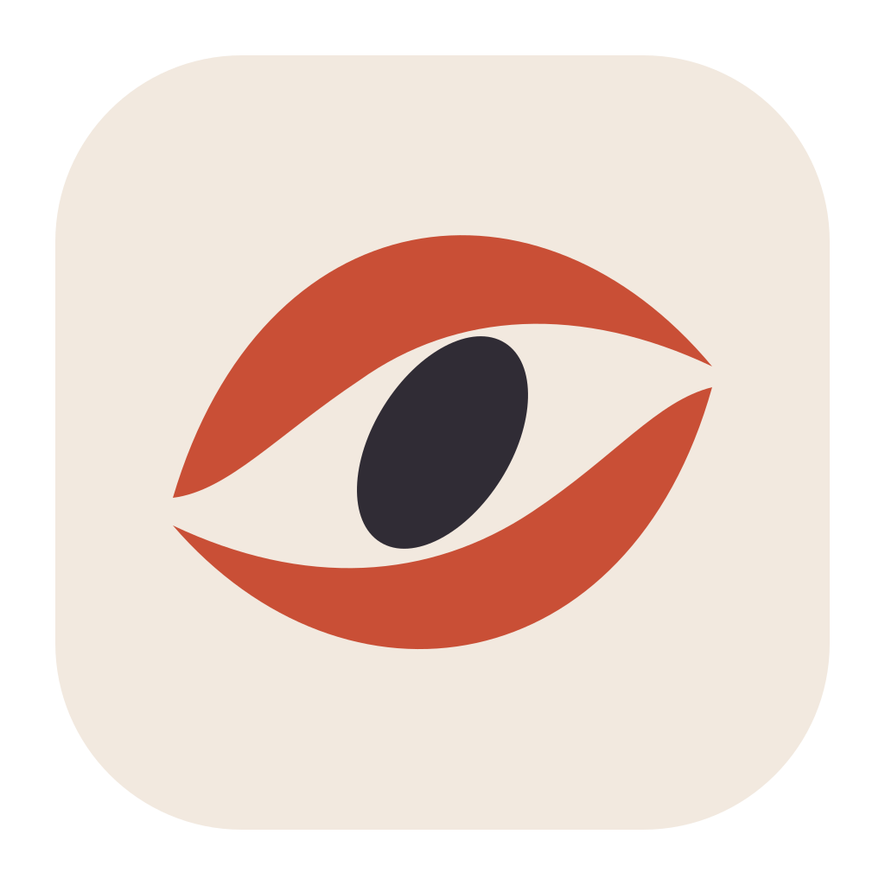
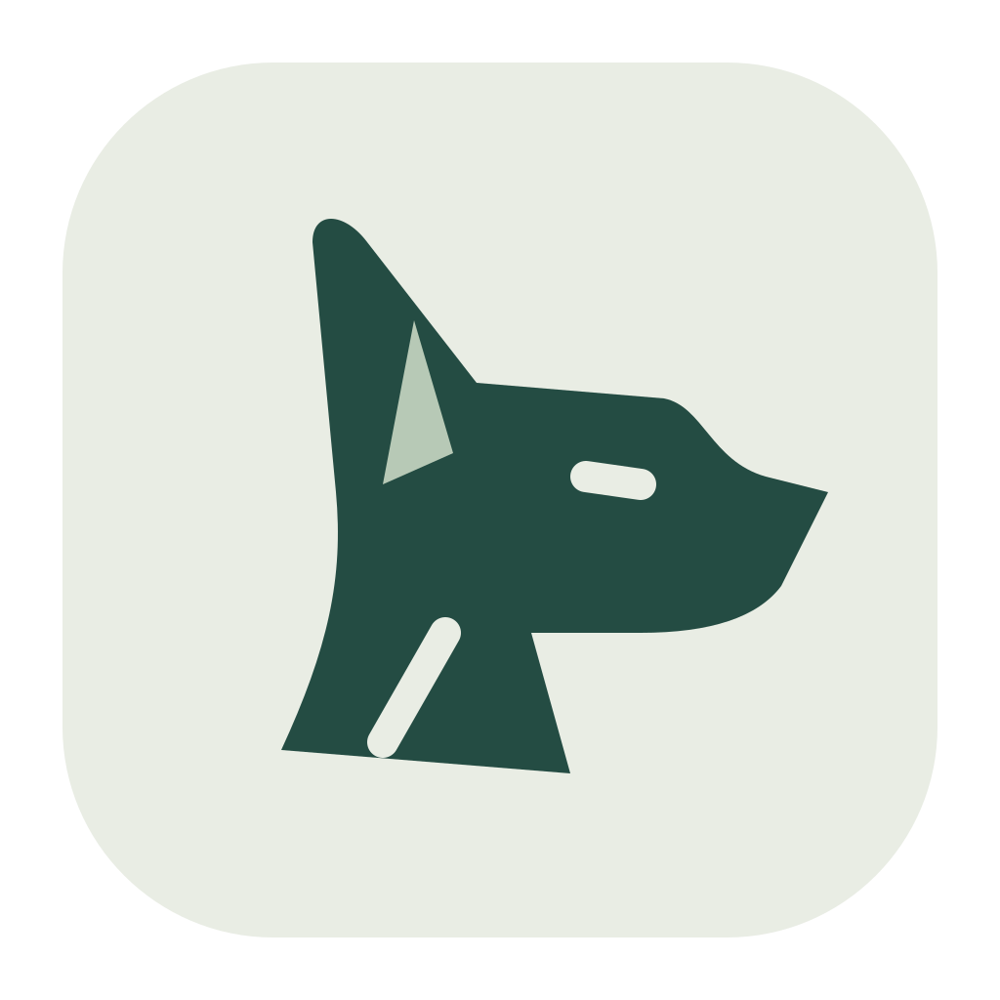
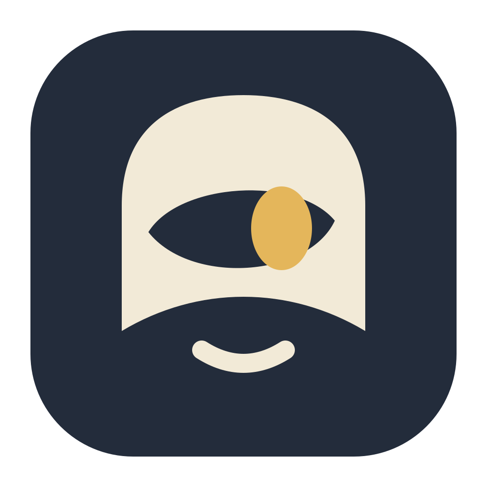
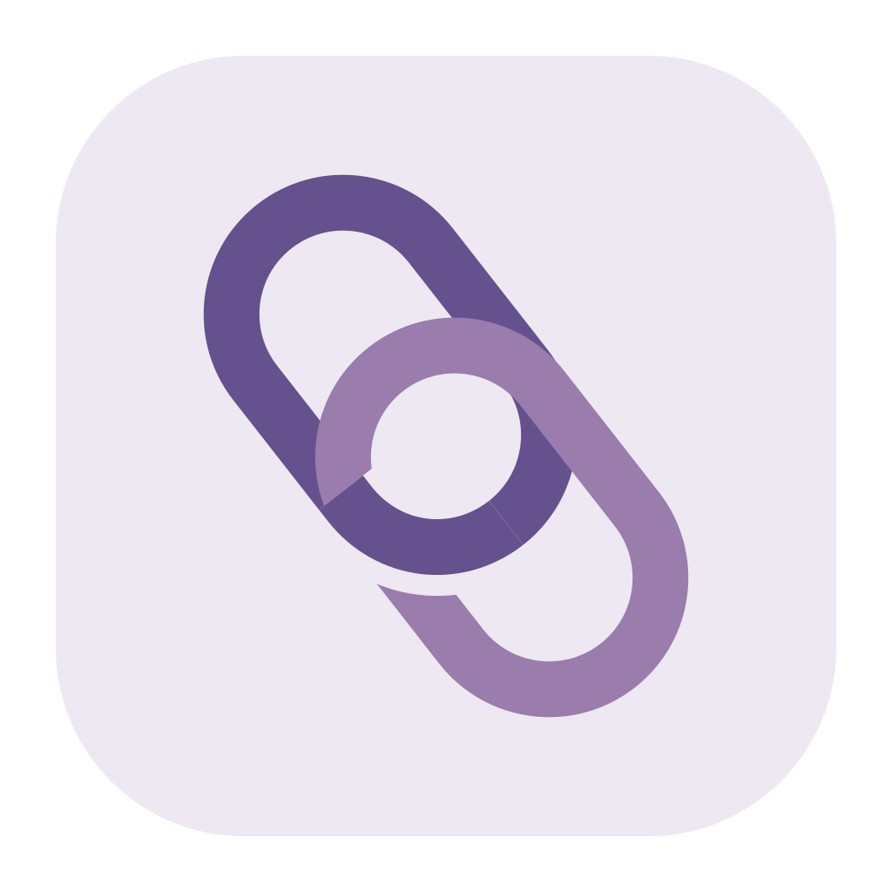
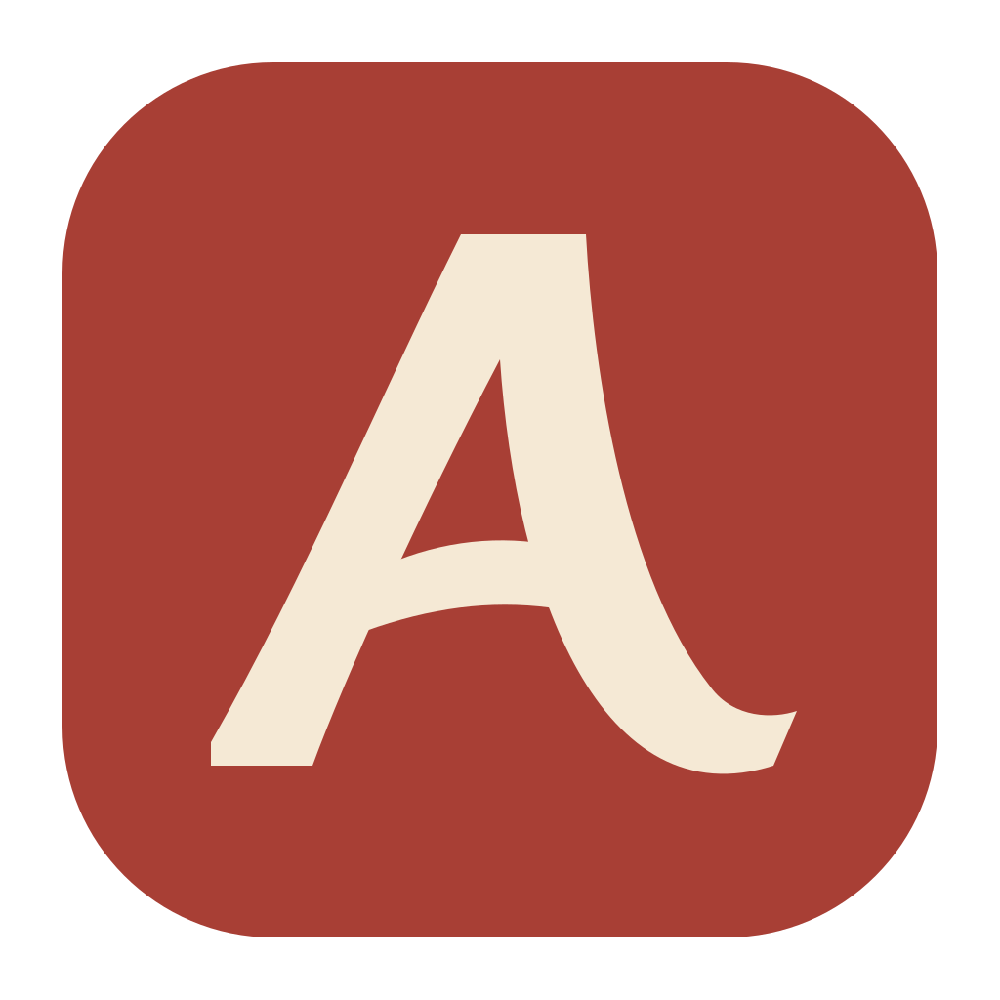

Un œil dessiné comme un ruban en mouvement.

Le chien vigilant : une silhouette, une oreille, un regard.

Un personnage discret qui regarde de côté.

Deux liens imbriqués, ouverts autour d’un centre.

Un A calligraphique, entre arche et signature.